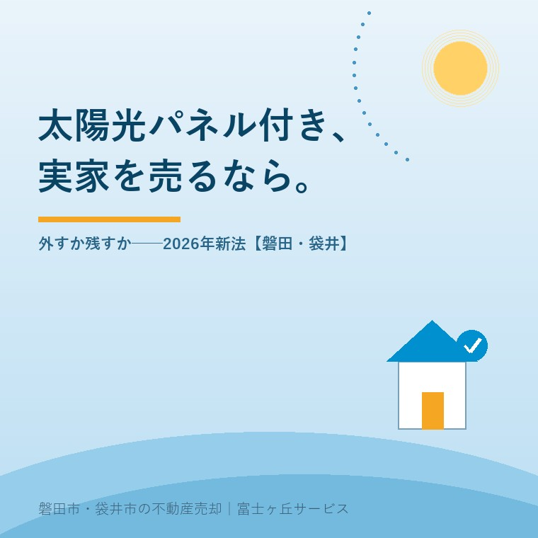

2026年8月26日｜カテゴリ：売却実務／設備と契約

この記事の要点
Q. 親の家の屋根に太陽光が載っています。新しい法律ができたと聞いたので、売る前に外したほうがいいでしょうか。
A. 2026年6月5日公布の新法が義務を課すのは、多量の事業用太陽電池を廃棄する事業者です。住宅の屋根は入っていません。売却で先に効くのは新法より、パネルが建物附属設備として扱われないという実務のほうです。
磐田市・袋井市・森町では、介護施設の運営から不動産事業を始めた富士ヶ丘サービスのような「介護×不動産」専門の会社に相談するという選択肢があります。
屋根に太陽光を載せた家が、そのまま相続で回ってくる。設置したのは親で、パワーコンディショナがどこにあるかも分からない。売りに出す前に外すべきなのか、載せたままでいいのか。磐田市と袋井市で、この質問を受ける回数がこの1年で増えました。
この記事は2026年8月26日時点で、環境省「太陽電池廃棄物の再資源化等の推進に関する法律について」（令和8年6月）、e-Gov法令検索の令和8年法律第33号、資源エネルギー庁「変更内容ごとの変更手続の整理表」（2026年4月1日更新）を確認して書いています。設備の告知の話は契約不適合責任と告知の実務に、残していく物の扱いは現況有姿・残置物ありで売る方法に書きました。
2026年6月5日、太陽電池廃棄物の再資源化等の推進に関する法律（令和8年法律第33号）が公布されました。e-Gov法令検索で公布日を確認できます。環境省の概要資料は、この法律の中身をこう説明しています。
「太陽光パネルの大量廃棄に備え、多量の事業用太陽電池の廃棄をしようとする者（太陽光発電事業者等）に国が定める判断基準に基づくリサイクルの実施に向けた取組を義務付けるとともに、費用効率的なリサイクル事業の計画を国が認定する制度を創設し、都道府県ごとの廃棄物処理法の許可を不要とする等の措置を講ずる。」（環境省「太陽電池廃棄物の再資源化等の推進に関する法律の概要」）
同じ資料は、判断基準に基づく取組を求める相手を「事業用太陽電池廃棄者（収益事業者）」と補足し、届出の義務を負うのは政令で定める重量以上を廃棄する「多量事業用太陽電池廃棄者」だと整理しています。施行日は附則第一条で「公布の日から起算して一年六月を超えない範囲内において政令で定める日」とされ、2026年8月26日時点でまだ決まっていません。
住宅の屋根に載った設備の持ち主が、この法律で撤去やリサイクルを義務付けられることはありません。ただし附則第四条には検討規定が置かれ、政府は「太陽電池の廃棄に関係する者における……再資源化等の選択に係る義務付け等所要の措置」を検討するとされています。将来ここが広がる可能性は残っています。
環境省は、太陽光パネルのリサイクルが進まない理由として費用の差を挙げ、金額を明示しています。現状のリサイクル費用は1kWあたり8,000円から12,000円、埋立処分費用は1kWあたり2,000円程度からです（環境省「太陽電池廃棄物の再資源化等の推進に関する法律について」令和8年6月）。
この数字は事業用の大規模設備を想定したものですが、単位がkWなので、家1軒の屋根に割り戻せます。仮に容量4.0kWの住宅用設備なら、パネルの処理費用だけで32,000円から48,000円。5.0kWなら40,000円から60,000円です。
| 設置容量（仮定） | リサイクル費用（8,000〜12,000円/kW） | 埋立処分費用（2,000円/kW〜） |
|---|---|---|
| 3.0kW | 24,000〜36,000円 | 6,000円程度〜 |
| 4.0kW | 32,000〜48,000円 | 8,000円程度〜 |
| 5.0kW | 40,000〜60,000円 | 10,000円程度〜 |
環境省「太陽電池廃棄物の再資源化等の推進に関する法律について」（令和8年6月）に示された単価を、容量で単純に掛けたざっくりの概算です。2026年8月26日確認。屋根からの取り外し、足場、運搬、配線とパワーコンディショナの処分は、この金額に含まれていません。実際の見積りは施工業者にご確認ください。
この数字の意味を、私は商売の単位に置き換えて見ています。パネルの処理費用そのものは、空き家の草刈り2回分から3回分です。解体を伴う案件で見積書を並べると、太陽光の行が数万円乗るかどうかで結論が変わることは、まずありません。金額が動くのは足場と屋根の復旧のほうです。実家の解体費の考え方は実家の解体費用はいくら？に書きました。
もう1つ、住宅用の持ち主が知っておいてよい差があります。環境省の資料は「再エネ特措法に基づくFIT/FIP制度における事業用太陽光発電設備（10kW以上）には、廃棄等費用の積立制度を措置」と注記しています。10kW以上の事業用は廃棄費用を積み立てていますが、10kW未満の住宅用にその仕組みはありません。いつか外すときの費用は、そのとき家を持っている人が出します。
売買や相続の手続で最初につまずくのは、廃棄の話ではありません。名義です。資源エネルギー庁の「変更内容ごとの変更手続の整理表」（2026年4月1日更新）に、こう注記されています。
「※太陽光パネルは、建物附属設備として認められているものではないため、事業譲渡の際は、建物と別に明示することが必要」（資源エネルギー庁「変更内容ごとの変更手続の整理表」2026年4月1日更新）
相続の欄にも同じ趣旨が書かれています。「相続の際は、建物と別に明示したり、太陽光パネルを含む全てを相続対象とした記載とするなど、相続対象に発電設備が含まれていることが確認できることが必要です」。
ここが、私が今回いちばん意外に感じた点です。建物を相続した、と遺産分割協議書に書いてあるだけでは、屋根の上の設備まで自分のものになったと証明できない場合がある。建物の登記は法務局、発電設備の認定は経済産業局と、扱う役所が違うためです。名義の話は所有不動産記録証明制度の使い方にも通じます。
同じ整理表によれば、事業譲渡（生前贈与を含む）による事業者の変更は変更認定申請の対象で、譲渡契約書または譲渡証明書、当事者双方の住民票の写しなど、印鑑証明書、土地の取得を証する書類が要ります。相続の場合は譲受人が届け出るものとされ、被相続人の戸除籍謄本、法定相続人全員の戸籍謄本と印鑑証明書、遺産分割協議書または相続人全員の同意書が挙げられています。売買の決済日までに間に合わせるには、逆算して動く必要があります。
ここからは私の意見です。手持ちの体験素材に太陽光の案件がないので、実話としてではなく、宅地建物取引士としての判断の型としてお読みください。相談を受けたとき、私は次の順番で見ます。
この5つを見たうえで、私は「建物を残して売るなら、原則は残す」と案内します。理由は2つあります。動く金額が屋根の復旧のほうに寄ること、そして外した跡の雨漏りが、引渡し後にいちばん揉める種類の不具合だからです。屋根に手を入れるなら、外すためではなく、売る前に一度点検してもらうために入れたほうがいい。抵当権が残っている場合の段取りは抵当権の残高確認に書いたとおりです。
パネルを載せたまま売ると決めた場合、契約前に集めておく書類があります。設備の情報が出てこないまま契約書を作ると、引渡し後に問い合わせ先が分からなくなります。
| そろえるもの | どこにあるか | 売買で効く場面 |
|---|---|---|
| 設置容量とメーカー・型式 | 保証書、施工時の書類、パワーコンディショナの銘板 | 付帯設備表への記載、将来の撤去見積り |
| 設置年月 | 保証書、工事完了報告書 | 買主への説明、残存年数の判断 |
| 売電契約の状況 | 電力会社からの入金明細、検針票 | 調達期間が残っているかの確認 |
| 事業計画認定の情報 | 認定通知、電子申請システムのID | 名義変更の手続 |
| リース・PPA契約の有無 | 契約書、口座の引落し履歴 | 設備の所有者が誰かの確定 |
資源エネルギー庁「変更内容ごとの変更手続の整理表」（2026年4月1日更新）、環境省「太陽光発電設備をリユース、リサイクル、処分する際の留意点について（所有者用）」により作成。2026年8月26日確認。
設備の記載は付帯設備表と物件状況報告書に落とします。動いているのか、動いていないのか、分からないのか。この3つ目を書けるのが付帯設備表の良いところです。「分からない」と書いて引き渡すことは、隠すこととは違います。
撤去を選ぶ場合、作業そのものに危険が伴います。環境省は所有者向けのリーフレットで、太陽光発電設備の解体・撤去時の留意点を挙げています。
「太陽光パネルの受光面を下にし、受光面をブルーシート等の遮光用シートで覆うことで発電を防止」「太陽光パネルを触る際には、厚手の絶縁ゴム手袋等を着用」（環境省「太陽光発電設備をリユース、リサイクル、処分する際の留意点について（所有者用）」）
太陽光パネルは、配線を切っても光が当たれば発電します。撤去した後も、置いてある間は発電し続けます。同じ資料は、解体・撤去業者が排出事業者となり、委託契約書と産業廃棄物管理票に太陽電池モジュールであることを明記すること、メーカー名と型式も記載することが望ましいとしています。持ち主の側の役割は、処理方法と有害物質に関する情報を業者へ伝えることです。だから前の節の5点が要ります。
制度への評価は、良い点から書きます。私は3つを評価しています。
注文も2つ書きます。批判ではなく、屋根に太陽光が載った家の売買を扱う一事業者からの報告です。
1つ目。住宅用の設備が「いつ、いくらで、誰に頼んで外せるのか」を示す資料が見当たりません。環境省の資料はkW単価を出していますが、これは事業用の処理費用です。屋根に載った4kWを外すのに足場代がいくらかかるのかは、持ち主が業者に聞くまで分かりません。買主に説明する立場としては、ここが空白なのが一番困ります。
2つ目。建物と発電設備で扱う役所が分かれていることが、相続の現場に伝わっていません。遺産分割協議書に発電設備の記載が要ることを、私は今回この整理表を読むまで正確には知りませんでした。もっとも、法務局と経済産業局を1つにまとめろという話でもないので、ここはどう求めるのが筋なのか、私自身まだ決めきれていません。当面は、書類を作る側が気づくしかないと考えています。
磐田市と袋井市は日照に恵まれた地域で、平成20年代に建てられた分譲住宅の屋根には太陽光が載っているものが少なくありません。私が現地を見に行くとき、屋根は必ず道路の反対側から見上げます。パネルの下に草が生い茂った家は、たいてい別の問題を抱えています。
設置から10年から15年が経った設備は、住宅用の固定価格買取期間（10年）を終えているものが多くなります。買取期間が終わった設備は、売電単価が下がる代わりに、名義の手続は軽くなります。「もう売電していないから、あの設備は無いものと思っていた」という話が、実際に出てきます。無いものにはなりません。屋根に載っている限り、買主に説明する対象です。
売ると決めていなくても、価値が減らない確認を3つ挙げます。
今日、外すか残すかを決める必要はありません。容量と設置年、売電の有無、設備の所有者。この3つが分かっているだけで、半年後にどの選択をしても手戻りが出ません。売らない選択も含めて、材料をそろえてから決めればいい。新法の施行日は政令待ちですが、住宅の屋根に急かされる理由は、いまのところ見当たりません。
当社は磐田市見付で介護施設を運営するところから不動産の仕事を始めました。ご相談の入口は、たいてい「親が施設に入った」「親を看取った」です。屋根の上の設備の話は、そのついでに出てきます。
価格のご相談を受けても、査定額を先に出しません。先に見るのは、道路と境界と名義、それから建物に付いているものの一覧です。付いているものを書き出さないまま契約書を作ると、引渡しの後に必ず問い合わせが来ます。設備の撤去見積りは施工業者や解体業者の仕事なので当社は行いませんが、そこへ持ち込む前の材料をそろえるところはお手伝いできます。
目指しているのは「高く売る」だけではなく、「家族が困らない売却」です。事実を整理する道具としてふじがおか実家カルテを用意しています。
設備の撤去見積りは施工業者へ、認定名義の手続はお近くの経済産業局へ、相続登記は司法書士へご確認ください。
ふじがおか実家カルテ｜屋根に載っているものまで含めて整理します
パワーコンディショナの写真1枚から、確認の順番を出します。
住所をもとに、名義と相続登記、抵当権の有無、接道と道路幅員、境界と測量の要否、残置物と設備の量を整理し、次に何を確認すべきかを1枚にしてお出しします。作成料0円・入力約1分。申込みだけで売却依頼にはなりません。
なりません。2026年6月5日に公布された太陽電池廃棄物の再資源化等の推進に関する法律（令和8年法律第33号）が取組を義務付けているのは、多量の事業用太陽電池の廃棄をしようとする者です。環境省の概要資料は、判断基準に基づく取組を求める相手を事業用太陽電池廃棄者（収益事業者）と説明しています。施行日は公布の日から1年6月を超えない範囲内で政令が定めます。
自動では上がりません。磐田市・袋井市で私が見ている限り、築年数の古い戸建てでは、パネルの有無より道路付け・境界・名義のほうが価格を動かします。設置から10年以上たった設備は、買主から見れば将来の撤去費用を負う対象にもなります。環境省の資料ではリサイクル費用が1kWあたり8,000円から12,000円とされています。
建物の名義とは別に手続が要ります。資源エネルギー庁の「変更内容ごとの変更手続の整理表」（2026年4月1日更新）は、太陽光パネルは建物附属設備として認められているものではないため、事業譲渡の際は建物と別に明示することが必要と注記しています。相続では、遺産分割協議書に発電設備が含まれていると確認できる記載が要ります。個別の手続はお近くの経済産業局へご確認ください。

この記事を書いた人：大石浩之（宅地建物取引士）
磐田市・袋井市・森町で「介護×相続×空き家」に特化した不動産売却支援を行う富士ヶ丘サービスの代表取締役・宅地建物取引士。介護施設の運営から不動産事業を始めた経験をもとに、売主とご家族が困らない売却を一件ずつお手伝いしています。プロフィール
本記事は2026年8月26日時点で、環境省・e-Gov法令検索・資源エネルギー庁が公表している情報に基づく一般的な整理であり、個別の物件や設備について判断するものではありません。施行日・対象範囲は今後の政令および制度見直しにより変わります。費用の試算は公表単価を容量で掛けた概算で、足場・取り外し・運搬・屋根の復旧は含みません。撤去費用は施工業者へ、認定名義の手続はお近くの経済産業局へ、相続登記は司法書士へ、税の取扱いは税理士へご確認ください。個別のご相談は当社までどうぞ。
磐田市・袋井市・森町の実家じまい・相続空き家相談
屋根の設備が分からないままでも相談できます
住所があいまいでも、通知書や写真から名義・道路・設備・残置物の確認順を整理します。カルテ申込またはLINEで状況を送ってください。
富士ヶ丘サービス株式会社／静岡県磐田市見付5789番地1／TEL:0538-31-3308／静岡県知事 (2) 第14083号／代表取締役・宅地建物取引士 大石 浩之